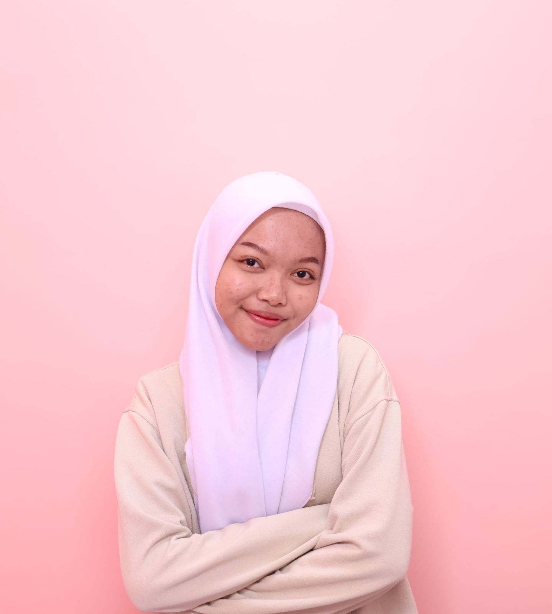

Tirta Widyadari

Ringkasan
Saya memiliki kepribadian yang mudah beradaptasi, mampu bekerja dalam tim maupun individu, serta mampu mengatur waktu dengan baik.
Pendidikan
- MAN 3 Makassar (2015 - 2018)
- Sarjana Sains, Fisika, Universitas Hasanuddin (2018 - 2022)
Pengalaman Kerja
- Laboratory Analyst - PT. IMIP
(2022 - 2024)
- Mengambil dan mempersiapkan sampel
- Menguji kualitas air limbah, emisi udara, dan limbah B3
- Melakukan uji laboratorium terhadap nikel
- Quality Control - PT. Prima Megah Indonusa
(2024 - sekarang)
- Memahami interpretasi geologi, grade control, ore blending, dan manajemen bahan tambang
- Melakukan uji kualitas pada bahan baku, sampel proses, dan produk akhir
- Mengawasi metode pengujian, SOP, dan dokumentasi laboratorium
Skills
- Problem solving & critical thinking: ⭐⭐⭐⭐⭐
- Leadership & Teamwork: ⭐⭐⭐⭐⭐
- Data analysis: ⭐⭐⭐⭐⭐
Penghargaan dan Sertifikat
- Employee of the month - PT. IMIP (2023)
- Professional Certification in Chemical Analysis - BNSP (2024)
Lainnya